The shadow cabinet
15
Shadow cabinet members
46
Government agencies shadowed
15
Portfolios with named officials
Members
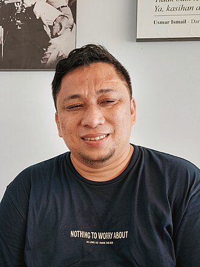
Feri Amsari
Menteri Sekretaris Negara
Kementerian Sekretariat Negara (Kemensetneg)Roles and affiliations
Officials shadowed
Prasetyo Hadi (Mensesneg); Dudung Abdurachman (KSP); Muhammad Qodari (Bakom)
Affiliations
Dosen HTN FH Universitas Andalas; ex Direktur PUSaKO 2017-2023; Themis Indonesia; PoshDem (per IG bio)
Appearances
X @feriamsari; IG @feriamsari (300K); tirto.id; Tribunnews; Viva; PolitikIndonesia; Tempo (wawancara); police report case, Viva Apr 2026
Portfolio role
Chairs and coordinates the shadow cabinet, runs its administration, fronts its public positions.
Agency roles
Mensesneg runs presidential administration support; KSP gives the president staff support and policy control; Bakom RI coordinates government public communication.
Ahmad Jilul Qur'ani Farid
Sekretaris Kabinet
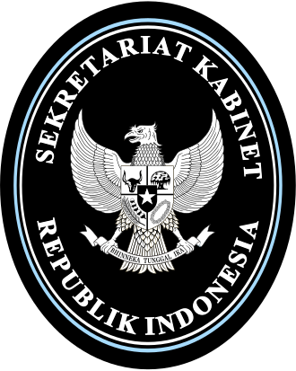
Sekretariat KabinetRoles and affiliations
Officials shadowed
Teddy Indra Wijaya
Affiliations
Direktur Eksekutif Masyarakat Transparansi Indonesia; HI Universitas Airlangga
Appearances
Tribunnews; PolitikIndonesia; IDN Times ("zaken kabinet" quote). Personal social not found
Portfolio role
Prepares shadow cabinet sittings and coordinates policy across portfolios.
Agency roles
The Cabinet Secretariat prepares and manages cabinet meetings and gives technical support to the president.
Armand Suparman
Menteri Dalam Negeri dan Keamanan Negara
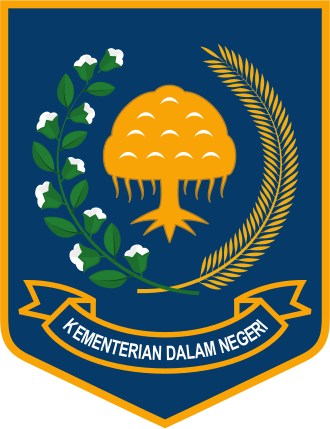
Kementerian Dalam Negeri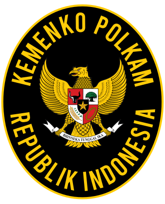
Kementerian Koordinator Bidang Politik dan Keamanan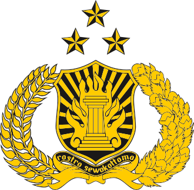
Kepolisian Negara Republik Indonesia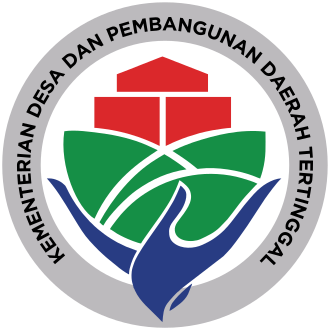
Kementerian Desa dan Pembangunan Daerah TertinggalRoles and affiliations
Officials shadowed
Tito Karnavian (Mendagri); Djamari Chaniago (Menko Polkam); Listyo Sigit Prabowo (Kapolri); Yandri Susanto (Mendes PDT)
Affiliations
Direktur Eksekutif KPPOD; Filsafat Ledalero; S2 Sosiologi FISIP UI
Appearances
Tribunnews (press conference photo); TrenAsia; KabarMinang; Sumatrakini. Personal social not found
Portfolio role
Oversight of domestic governance, regional autonomy, villages and national security institutions.
Agency roles
Kemendagri guides and supervises regional government and general governance; Menko Polkam coordinates politics, law and security; Polri maintains internal security and law enforcement; Kemendes runs village development and disadvantaged regions.
Shofwan Al Banna Choiruzzad
Menteri Luar Negeri
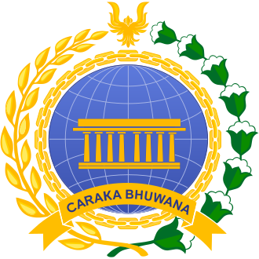
Kementerian Luar NegeriRoles and affiliations
Officials shadowed
Sugiono
Affiliations
Associate Professor HI FISIP UI; Sekretaris Eksekutif ASEAN Studies Center UI; PhD Ritsumeikan, Jepang
Appearances
Tribunnews; profil IR UI, FISIP UI, ARC UI, AMINEF. Personal social not found
Portfolio role
Oversight of foreign policy and diplomacy.
Agency roles
Kemenlu conducts foreign relations and diplomacy.
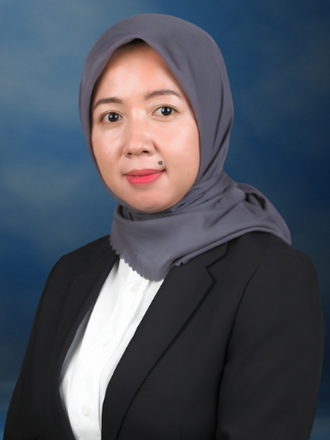
Curie Maharani Savitri
Menteri Pertahanan
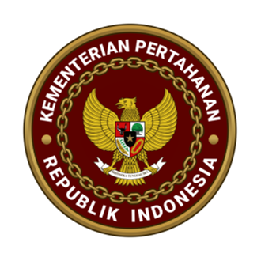
Kementerian PertahananRoles and affiliations
Officials shadowed
Sjafrie Sjamsoeddin
Affiliations
Dosen HI FISIP Universitas Bina Nusantara; PhD Cranfield University; MT ITB
Appearances
Tribunnews. Personal social not found
Portfolio role
Oversight of defence policy, military posture and arms procurement.
Agency roles
Kemhan formulates national defence policy.
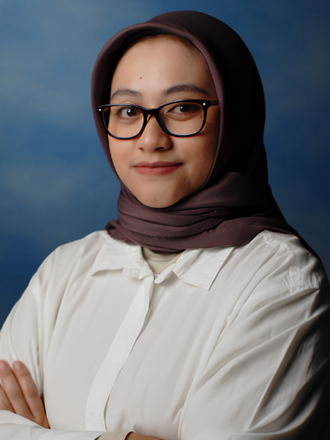
Khoirunnisa Nur Agustyati
Menteri Hak Perempuan dan Kelompok Marginal
Kementerian Pemberdayaan Perempuan dan Perlindungan AnakKementerian Hak Asasi ManusiaRoles and affiliations
Officials shadowed
Arifatul Choiri Fauzi (Menteri PPPA); Natalius Pigai (MenHAM)
Affiliations
Peneliti Perludem; ex peneliti CETRO; S1 Sosiologi UI, S2 Ilmu Politik UI
Appearances
Tribunnews. Personal social not found
Portfolio role
Oversight of women's rights and marginal groups.
Agency roles
Kemen PPPA runs gender equality, women's empowerment and child protection; KemenHAM runs human rights affairs.
Yance Arizona
Menteri Hukum dan Kebijakan Negara
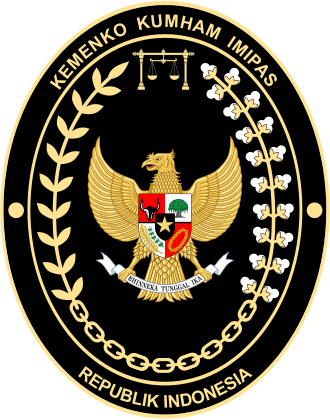
Kementerian Koordinator Bidang Hukum, Hak Asasi Manusia, Imigrasi, dan PemasyarakatanKementerian Hukum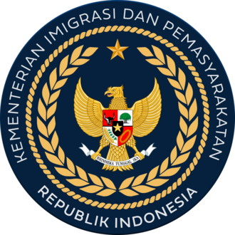
Kementerian Imigrasi dan PemasyarakatanKementerian Pendayagunaan Aparatur Negara dan Reformasi Birokrasi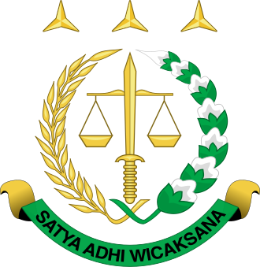
Kejaksaan Agung Republik IndonesiaRoles and affiliations
Officials shadowed
Yusril Ihza Mahendra (Menko Hukum); Supratman Andi Agtas (Menkum); Agus Andrianto (Menimipas); Rini Widyantini (MenPANRB); ST Burhanuddin (Jaksa Agung)
Affiliations
Dosen FH UGM; Ketua Pandekha UGM; PhD Law and Society, Leiden
Appearances
Tribunnews; Tribun-Papua (photo). Personal social not found
Portfolio role
Oversight of law, legislation, state governance and law enforcement institutions.
Agency roles
Menko Hukum coordinates the law and security cluster; Kemenkum drafts legislation and runs legal administration; Kemenimipas runs immigration and corrections; KemenPANRB reforms the state apparatus; the Attorney General's Office holds prosecution power.
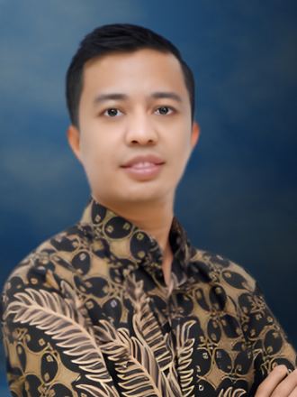
Media Wahyudi Askar
Menteri Perekonomian, BUMN, Industri dan Tenaga Kerja
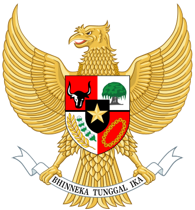
Kementerian Koordinator Bidang PerekonomianKementerian PerindustrianKementerian PerdaganganKementerian Investasi dan Hilirisasi/Badan Koordinasi Penanaman ModalKementerian KoperasiKementerian Usaha Mikro, Kecil, dan Menengah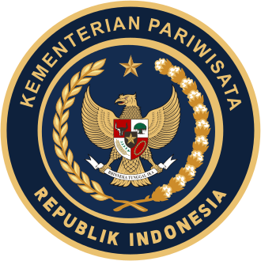
Kementerian Pariwisata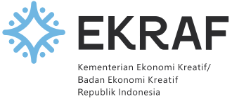
Kementerian Ekonomi Kreatif/Badan Ekonomi KreatifBadan Pengaturan Badan Usaha Milik NegaraRoles and affiliations
Officials shadowed
Airlangga Hartarto; Agus Gumiwang Kartasasmita; Budi Santoso; Rosan Roeslani; Ferry Juliantono; Maman Abdurrahman; Widiyanti Putri Wardhana; Teuku Riefky Harsya; Dony Oskaria
Affiliations
Dosen Manajemen dan Kebijakan Publik FISIPOL UGM; Direktur Kebijakan Publik CELIOS; PhD University of Manchester
Appearances
Tribunnews; Fisipol UGM (dok). Personal social not found
Portfolio role
Oversight of the economy, SOEs, industry and labor.
Agency roles
Menko Perekonomian coordinates economic policy; Kemenperin runs industrial policy; Kemendag runs trade; Ministry of Investment handles investment licensing; Kementerian Koperasi, UMKM, Pariwisata and Ekraf run their sectors; BP BUMN oversees state enterprises.
Bhima Yudhistira Adhinegara
Menteri Keuangan dan Tata Kelola Anggaran
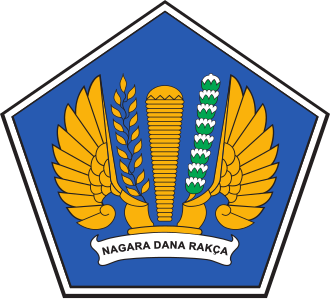
Kementerian KeuanganRoles and affiliations
Officials shadowed
Purbaya Yudhi Sadewa
Affiliations
Direktur Eksekutif CELIOS; ex peneliti INDEF; ex konsultan IFC-World Bank, JICA; Tenaga Ahli Bappenas; MSc University of Bradford
Appearances
X @BhimaYudhistira; IG @bhimayudhistira (70K); Facebook; saksi ahli MK 28 Jul 2026 (Kompas.com); tirto.id; Tribunnews (press conference)
Portfolio role
Oversight of state finances, taxation and budget governance.
Agency roles
Kemenkeu manages state revenue, spending, debt and fiscal policy.
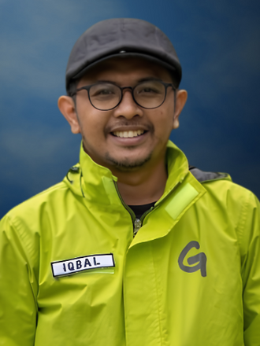
Iqbal Damanik
Menteri Perlindungan Lingkungan Hidup dan Perubahan Iklim
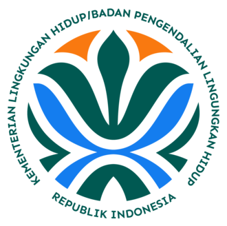
Kementerian Lingkungan Hidup/Badan Pengendalian Lingkungan HidupKementerian Energi dan Sumber Daya Mineral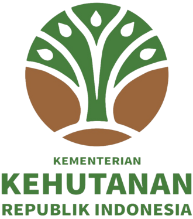
Kementerian Kehutanan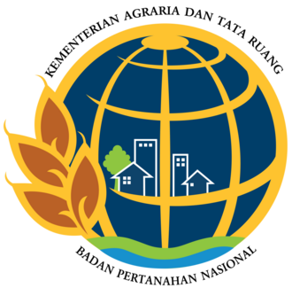
Kementerian Agraria dan Tata Ruang/Badan Pertanahan NasionalRoles and affiliations
Officials shadowed
Jumhur Hidayat; Bahlil Lahadalia; Raja Juli Antoni; Nusron Wahid
Affiliations
Manajer Kampanye Iklim dan Energi Greenpeace Indonesia; Ilmu Komunikasi USU; Ilmu Politik UI
Appearances
IG @bgdamanik (61K); X @iqdamanik71; Tribunnews (laporan teror bangkai ayam, Jan 2026); YouTube news
Portfolio role
Oversight of environmental protection, forestry and mining permits.
Agency roles
KLH runs environmental protection; KESDM runs energy and mineral resources; Kemenhut runs forestry; ATR/BPN runs land and spatial planning.
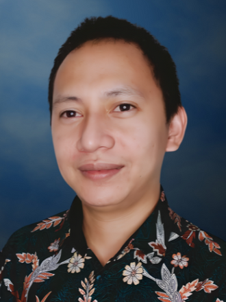
Iman Zanatul Haeri
Menteri Pendidikan dan Kebudayaan
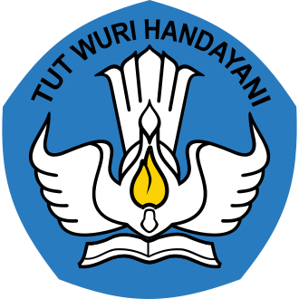
Kementerian Pendidikan Dasar dan Menengah Kementerian Pendidikan Tinggi, Sains, dan Teknologi
Kementerian Pendidikan Tinggi, Sains, dan Teknologi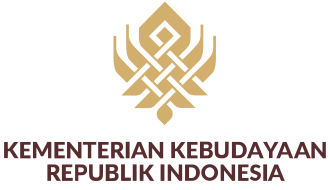
Kementerian KebudayaanKementerian Koordinator Bidang Pembangunan Manusia dan KebudayaanRoles and affiliations
Officials shadowed
Abdul Mu'ti; Brian Yuliarto; Fadli Zon; Pratikno
Affiliations
Guru sejarah MA Al-Tsaqafah Jakarta; Kepala Bidang Advokasi P2G; S1 dan S2 Pendidikan Sejarah UNJ
Appearances
Tribunnews; saksi MK 15 Jun 2026 (mkri.id). Personal social not found
Portfolio role
Oversight of education and culture.
Agency roles
Kemendikdasmen runs basic and secondary education; Kemendiktisaintek runs higher education, science and technology; Kemenbud runs culture; Menko PMK coordinates human development and culture.
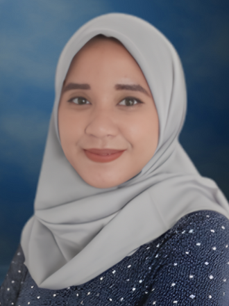
Nenden Sekar Arum
Menteri Riset, Teknologi dan Digital
Kementerian Pendidikan Tinggi, Sains, dan TeknologiKementerian Komunikasi dan DigitalRoles and affiliations
Officials shadowed
Brian Yuliarto; Meutya Hafid
Affiliations
Direktur Eksekutif SAFEnet; Teknik Informatika UMS; MSc Advanced Computer Science, University of Birmingham
Appearances
Tribunnews. Personal social not found; SAFEnet org account is the public channel
Portfolio role
Oversight of research, technology and the digital space.
Agency roles
Kemendiktisaintek runs higher education, science and technology; Komdigi runs ICT, telecommunications, broadcasting and digital governance.
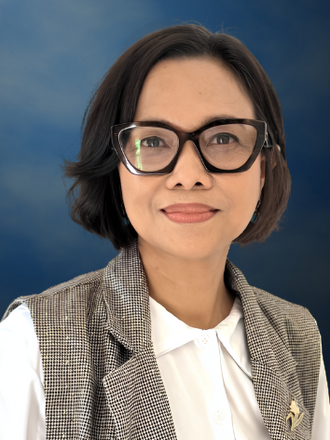
Irma Hidayana
Menteri Kesehatan
Kementerian KesehatanRoles and affiliations
Officials shadowed
Budi Gunadi Sadikin
Affiliations
Dosen kesehatan masyarakat Hofstra University, AS; salah satu pendiri LaporCOVID-19 dan Rumah Sehat Rakyat; S1 Filsafat UGM; S2 Montclair State; S3 Columbia
Appearances
LinkedIn (public profile); tirto.id; Tribunnews. Personal X/IG not found
Portfolio role
Oversight of public health.
Agency roles
Kemenkes runs health services and public health programs.
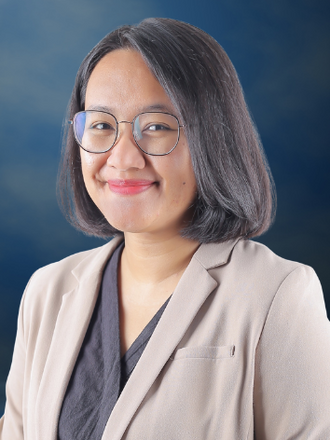
Nabiyla Risfa Izzati
Menteri Sosial dan Layanan Dasar
Kementerian Sosial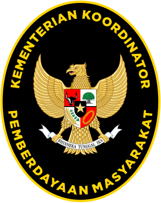
Kementerian Koordinator Bidang Pemberdayaan MasyarakatKementerian Ketenagakerjaan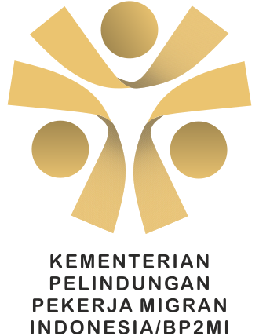
Kementerian Pelindungan Pekerja Migran Indonesia/Badan Pelindungan Pekerja Migran Indonesia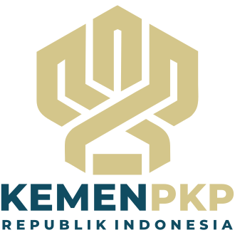
Kementerian Perumahan dan Kawasan PermukimanKementerian Kependudukan dan Pembangunan Keluarga/Badan Kependudukan dan Keluarga Berencana NasionalKementerian Pekerjaan UmumRoles and affiliations
Officials shadowed
Saifullah Yusuf; Muhaimin Iskandar; Yassierli; Mukhtarudin; Maruarar Sirait; Wihaji; Dody Hanggodo
Affiliations
Dosen FH UGM; Wakil Direktur Research Center for Law, Gender, and Society UGM; Adjunct Researcher CfDS UGM; Fairwork Indonesia; kandidat PhD Queen Mary University of London
Appearances
Tribunnews; diskusi YouTube KontraS 6 Jan 2023. Personal social not found
Portfolio role
Oversight of social welfare, labor and basic services.
Agency roles
Kemensos runs social welfare; Menko Pemberdayaan Masyarakat coordinates community empowerment; Kemnaker runs labor affairs; KemenP2MI runs migrant worker protection; Ministry of Housing runs housing and settlements; BKKBN runs population and family planning; PU runs public works and basic infrastructure.
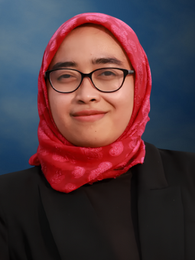
Isnawati Hidayah
Menteri Pertanian dan Kedaulatan Pangan
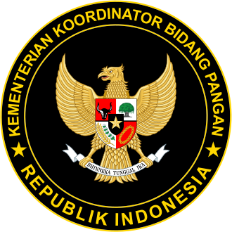
Kementerian Koordinator Bidang Pangan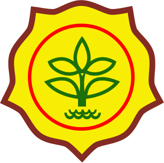
Kementerian PertanianKementerian Kelautan dan Perikanan Badan Gizi Nasional
Badan Gizi NasionalRoles and affiliations
Officials shadowed
Zulkifli Hasan; Andi Amran Sulaiman; Sakti Wahyu Trenggono; Sudaryono
Affiliations
Koordinator Nasional MBG Watch; alumni Universitas Negeri Malang
Appearances
Tribunnews. Personal social not found
Portfolio role
Oversight of agriculture, food sovereignty and nutrition.
Agency roles
Menko Pangan coordinates food policy; Kementan runs agriculture; KKP runs marine affairs and fisheries; BGN runs the national nutrition program.
An unofficial record kept by Lokanetra Information Observatory. The names and affiliations come from public reporting. Kabinet Bayangan does not run this page.